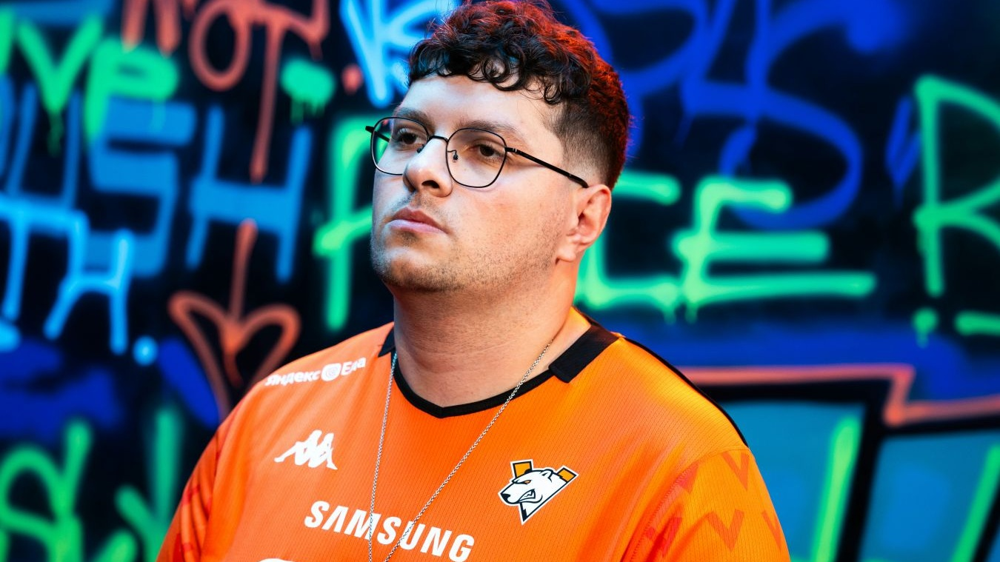

Кто он и как добился этого
Илья Игоревич Залуцкий родился 24 ноября 1999 года в Омске.
Свою карьеру Perfecto начал в 2017 году с Counter-Strike: Global Offensive. Его первой профессиональной командой считается Team 420. Однако в этом составе он сыграл всего лишь один полноценный матч. Позже он присоединился к российской команде Atlants, в составе которой сыграл не менее трёх матчей.
В октябре 2018 года Залуцкий успел выступить за состав skipping school, с которым поехал на турнир EPICENTER 2018 CIS Open Qualifier #4. В том же месяце его заметила команда Syman Gaming, в составе которой Perfecto получил большой игровой опыт, приняв участие в семи LAN-турнирах. Затем он отобрался на турнир StarLadder Berlin Major 2019 и одержал победу в рамках NEST Pro Series 2019.
имой 2020 года Илья «Perfecto» Залуцкий стал частью знаменитого состава Natus Vincere, а его дебютный матч под жёлто-чёрными цветами против Godsent состоялся 1 февраля 2020 года.
Осенью того же года произошёл скандал, связанный с положительным тестом Perfecto на COVID-19. Матч против ForZe был перенесён организаторами без согласования с российской командой, что вызвало волну негодования. ForZe публично обвинили «Рожденных Побеждать» в использовании своего авторитета для давления на турнирных операторов. В ответ Na’Vi заявили, что все претензии следует адресовать непосредственно организаторам турнира, а не им.
Как СТАТЬ «рождённым побеждать»? Илья поделился, какие ментальные сверхзадачи решает киберспорт в его жизни:
«Думаю, в связи тем, что лично мне нельзя по здоровью заниматься привычными видами спорта, здесь я нашел то, ради чего любил спорт, а именно: атмосфера состязаний, турниров и адреналин от каких-то игровых ситуаций».

14 июля 2023 года Илья «Perfecto» Залуцкий официально присоединился к организации Cloud9.
22 апреля 2024 года Cloud9 объявили о переводе Perfecto в запас и его доступности для трансфера. С этого времени Залуцкий не играл на про-сцене CS2.
26 июня 2025 года клуб Virtus.pro сообщил об изменениях в составе по Counter-Strike 2. К команде присоединился Илья «Perfecto» Залуцкий, заменив Тимура «FL4MUS» Марьева (переведён в запас).
25 июля 2025 года Virtus.pro вылетала из турнира IEM Cologne 2025, о чём высказался Залуцкий: "С такой игрой нам не место на Кельне. Извините кто болел."
В июне 2025 года у Ильи «Perfecto» Залуцкого и стримерши Татьяны «Sindi» Грачёвой родилась дочка. Перед рождением ребёнка пара официально заключила брак.